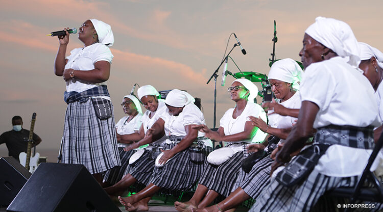

Batuque
O Batuque é uma das mais antigas expressões musicais de Cabo Verde, com raízes africanas profundas. Tradicionalmente praticado por mulheres, o batuque envolve canto responsorial, batidas fortes e ritmo marcante feito com o corpo e tecidos dobrados no colo.
Além de ser uma manifestação artística, o batuque tem grande valor cultural e histórico, simbolizando resistência, identidade e união das comunidades, especialmente na ilha de Santiago.